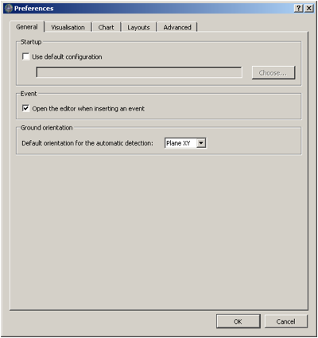
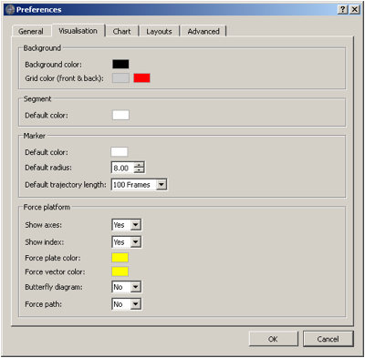
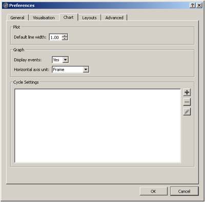
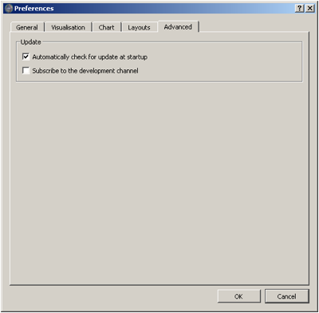

To access to the the Preferences / Options, you only have to go in the following menu:
- Menu
Edit > Options under Windows and Linux ;
- Menu
Mokka > Preferences under MacOS X.
General
-
- Startup: Option to load a default configuration at startup
- Event: Option to open (or not) the event editor when inserting an event
- Ground Orientation: To choose the default orientation for the automatic detection (Plane XY, Plane YZ, Plane ZX)
- Time Bar Event: To choose the default display for the time event bar (frame or time). Note: this also affect the display of the X axis of the chart. You can still modify the display of the X axis in the chart options
-

General options/preferences
Visualisation
-
- Background: Selection of the default color for the visualization of the background in the 3D view/li>
- Segment: Selection of the default color for the visualization of segments in the 3D view
- Marker: Selection of the default color, radius and trajectory's length to display for the visualization of markers in the 3D view
- Force platform: Options to show (or not) the axes and the index of the platforms in the 3D view as well as the selection of the colors for the platform and the force vector. Ground reaction butterfly diagram and force path can be activate or not
-

Visualisation options/preferences
Chart
-
- Plot: Option to define the plot default line width
- Graph: Options to display by default the events and to choose the unit of the X axis (frame or time)
- Graph: Cycle Settings: Add, remove or edit cycle settings display. You will find more details in the tutorial: Create a cycle definition
-

Chart options/preferences
Layouts
-
- This is the manager of the layouts which will affect the menu Windows > Layouts. You can rename the layouts, reorder them (by a simple drag and drop) and delete them.
-
Advanced
-
- Update: Permit to choose if Mokka automatically check for update at startup. Firewall must authorize Mokka to have an internet access.
-

Advanced options/preferences